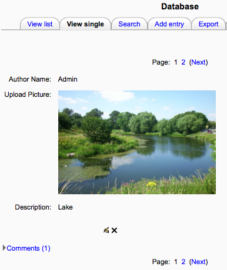

View list
The list view shows multiple entries, possibly in a more abbreviated form to ensure all the information fits. You may use the controls at the bottom of the screen to search and sort the contents.
- View single: one item at a time
- View list : several items at a time (number is user defined)
- Add entry : add an item to the database
- Search : search the entries
View single
Alternatively, you may view only one entry at a time. This might allow you to view more detailed information than the list view.
Add comment
If comments have been enabled, you may add a comment.
Rate entries
If ratings have been enabled, and made viewable, by the database editor, you may grade other database entries, and view these ratings.
Go to the “Add entry” tab and fill in the form.
Deleting multiple entries
In List view, a checkbox will appear next to each entry. Select the entries you wish to delete and click the ‘Delete selected’ button. Alternatively, click the ‘Select all’ and the ‘Delete all’ buttons to delete all entries. A warning message will appear asking you to verify what you wish to delete.
If the Database auto-linking filter is enabled, any entries in a database will be automatically linked to where the concept words and/or phrases appear within the same course. This includes forum postings, internal resources, week summaries etc.
Note: If you do not want particular text to be linked (in a forum posting, say) then you should add <nolink> and </nolink> tags around the text. Alternatively the filter can be disabled for a particular activity.
If, during database set up, ‘Approval required’ was set to ‘Yes’ then a teacher can approve an entry by clicking on the tick/checkmark icon.
Once an entry has been approved, it is possible to undo the approval by clicking the circle with a line through it icon.
You can import entries via a CSV file if you click the “Import entries” link under ‘Database activity administration’ in the Administration block of your course. CSV means Comma-Separated-Values and is a common format for text interchange.
The easiest way to determine the format of the text file is to manually add an entry to the database and then export it. The resulting export text file may then be edited and used for importing entries. Here’s a sample of what a very simple file will look like.
The expected file format is a plain text file with a list of field names as the first record. The data then follows, one record per line.
The field delimiter defaults to a comma character and the field enclosure is not set by default (field enclosures are characters that surround each field in each record).
Records should be delimited by new lines (usually generated by pressing RETURN or ENTER in your text editor). Tabs can be specified using t and newlines by n.
name,height,weight Kai,180cm,80kg Kim,170cm,60kg Koo,190cm,20kg |
Note: Do not put spaces after your commas or upload will fail!
You can export entries either in CSV (comma separated values) or ODS (OpenOffice Calc) formats by clicking the tab at the top or by clicking the “Export entries” link under ‘Database activity administration’ in the Administration block in your course. (Both CSV and ODS formats can be opened with MS Excel.)
When using the CSV format, the user can select either the comma, semicolon, or tab to separate the fields. The selection of the proper character is important. If users select to use a comma to separate the fields and some of the fields contain data with commas then the number of columns is going to be misaligned and likely cause confusion.
Users can select which fields from the database they wish to have exported. By default, all fields are checked to be included. Choose the fields that you wish to have included in the export.
Once the export type and the fields to be exported have been selected, clicking on the Export entries pushbutton will generate the file. The user will usually have the option of either opening or saving the file.
If an external portfolio such as Mahara has been enabled by the administrator then users have the option to export individual entries to that portfolio. They will see at the bottom of a database entry an “export” icon to click on and select the portfolio to export to.
You could use the database module to:
- allow collaboration on building a collection of web links/books/journal references related to a particular subject
- display student created photos/posters/websites/poems for peer comment and review
- gather comments and votes on a shortlist of potential logos/mascot names/project ideas
- provide a student file storage area
- maintain a log of what was done in a face-to-face class each day, so that absent students can get caught up themselves.